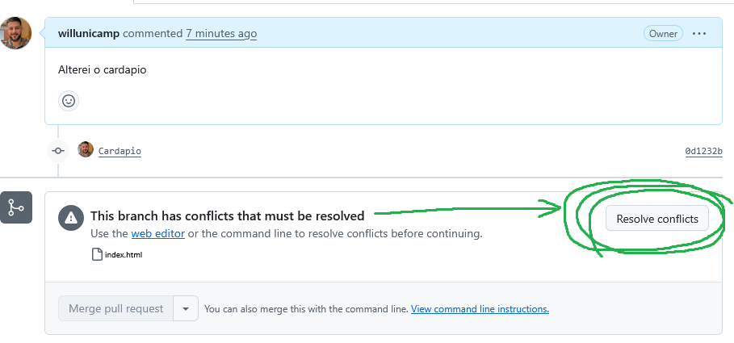
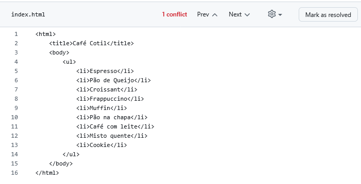

Aula 05
Prof. Will - Fundamentos de Informática
COTIL/UNICAMP
A Arte de Resolver Conflitos de Merge
Quando duas realidades colidem, aprenda a ser o mestre do tempo.
Recapitulando: Onde Paramos?
Na última aula, aprendemos o fluxo de colaboração mais comum do mundo open-source: o Fork & Pull Request.
Conseguimos sugerir uma mudança no repositório de um colega, que foi aceita e integrada com sucesso. Mas... e se não fosse tão simples?
O que é um Conflito de Merge?
Um conflito de merge acontece quando o Git não consegue decidir qual alteração manter. Isso ocorre quando duas pessoas (ou duas branches) modificam a mesma linha do mesmo arquivo.
Analogia: O Documento Compartilhado
Imagine que você e seu colega baixam a mesma versão de um texto. Você corrige o primeiro parágrafo, e ele reescreve o mesmo parágrafo. Quando vocês tentam juntar as versões, qual delas é a correta? O Git fica com a mesma dúvida e pede ajuda a um humano.
Exercício Prático: Vamos Criar um Conflito!
A melhor forma de aprender a resolver um problema é criá-lo em um ambiente seguro.
Vamos simular um cenário onde dois desenvolvedores trabalham em um cardápio de cafeteria ao mesmo tempo.
Aluno X
Dono do Repositório Original.
Aluno Y
Colaborador que fará o Fork.
Passo 1: Setup (Aluno X)
Aluno X cria a base do projeto cafeteria.
- No GitHub, crie um novo repositório chamado
cafeteria.
- Abra o novo repositório em um Codespace.
Passo 2: Setup (Aluno Y)
Aluno Y prepara seu ambiente para contribuir.
- Vá até o repositório
cafeteria do Aluno X e clique em Fork.
- Abra o SEU repositório "forkado" em um novo Codespace.
- No terminal do Codespace, crie uma nova branch para fazer suas alterações e mude para ela.
$ git switch -c cardapio
Passo 3: A Colisão (AMBOS)
Hora de editar a mesma parte do código!
- Ambos os alunos, em seus respectivos Codespaces, devem abrir o arquivo
index.html.
- Adicionem 5 novos itens diferentes à lista
<ul>. Não combinem os itens!
- O Aluno X deve estar trabalhando na branch
main.
- O Aluno Y deve estar trabalhando na branch
cardapio.
- Após salvar, ambos devem fazer o processo de add, commit e push.
Passo 3.1: Comandos do Push (AMBOS)
Após salvar as alterações no index.html, executem estes comandos.
$ git add index.html
$ git commit -m "Adiciona novos itens ao cardapio"
$ git push
Passo 4: O Pull Request (Aluno Y)
Aluno Y sugere suas mudanças para o projeto original.
Vá até a página do seu Fork no GitHub. Crie um Pull Request da sua branch cardapio para a branch main do repositório do Aluno X.
Ao fazer isso, o GitHub irá avisar...
O CONFLITO!
"Can't automatically merge"
O GitHub não consegue unir os arquivos porque ambos modificaram a mesma seção. Ele mostra um aviso claro de que há conflitos que precisam ser resolvidos manualmente.

Não se desespere! Isso é normal. Clique no botão "Resolve conflicts".
Entendendo os Marcadores de Conflito
O GitHub abrirá um editor de texto mostrando o arquivo com marcadores especiais inseridos pelo Git:
<ul>
<li>Espresso</li>
<<<<<<< main (As mudanças que vieram da branch base)
<li>Pão de Queijo</li>
<li>Croissant</li>
=======
<li>Frappuccino</li>
<li>Muffin</li>
>>>>>>> cardapio
</ul>
Resolvendo o Conflito no GitHub
Sua missão: "limpar" o arquivo.
- Edite o código diretamente no editor do GitHub para chegar à versão final desejada. Decida quais itens manter (neste caso, todos!).
- Apague os marcadores de conflito inseridos pelo Git:
<<<<<<< main=======>>>>>>> cardapio
- Após o arquivo ficar limpo e com o conteúdo final correto, clique em "Mark as resolved".
- Finalmente, clique em "Commit merge" para salvar a resolução do conflito.
Merge Realizado com Sucesso!
Após resolver o conflito, o Pull Request estará pronto para o merge. O Aluno X pode agora clicar em "Merge pull request" com segurança.

Parabéns, vocês resolveram seu primeiro conflito!
Passo Final: Sincronizando (Aluno X)
O trabalho foi integrado no GitHub, mas seu Codespace não sabe disso!
O Aluno X precisa atualizar seu ambiente de trabalho para baixar as mudanças que foram integradas (incluindo as contribuições do Aluno Y).
$ git switch main
$ git pull
O arquivo index.html no Codespace do Aluno X será atualizado magicamente!
Invertendo os Papéis: Loja de Games
Agora, vamos praticar de novo, trocando as funções.
- Aluno Y: Cria um novo repositório
loja-de-games com um index.html contendo uma lista de 5 jogos.
- Aluno X: Faz o Fork, abre-o em um Codespace, e cria uma branch
catalogo.
- Ambos: Adicionam 5 jogos diferentes à mesma lista em suas respectivas branches.
- Ambos: Fazem add, commit e push.
- Aluno X: Abre o Pull Request para o repositório do Aluno Y.
- Aluno Y: Gerencia e resolve o conflito que aparecerá.
Resumo da Aula
O que aprendemos hoje:
- O que é um Conflito de Merge e por que ele acontece.
- Como provocar um conflito de forma controlada para estudo.
- Interpretar os marcadores de conflito (
<<<<<<<, =======, >>>>>>>).
- Como resolver conflitos diretamente na interface do GitHub.
- A importância de usar
git pull para manter o ambiente de trabalho sincronizado.
Fim do Módulo Git & GitHub
Parabéns! Vocês agora dominam as ferramentas essenciais para colaboração em desenvolvimento de software.
Bons estudos para a avaliação!